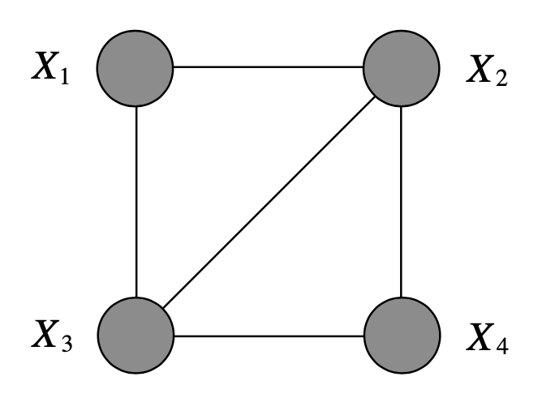

Parameter Learning with Complete Data
Learning methods
Maximum likelihood estimate (MLE)
θ^≜θargmaxp(D∣θ)=θargmaxlogp(D∣θ)
Maximum a posteriori (MAP) estiamte
θ^≜θargmaxp(θ∣D)=θargmaxp(D∣θ)p(θ)=θargmax[logp(D∣θ)+logp(θ)]
Note that under strong sampling assumption, p(D∣θ)=[∣θ∣1]I. Since the likelihood p(D∣θ) depends exponentially on N, and the prior p(θ) stays constant, as we get more and more data, the MAP estimate converges towards the MLE. In other words, if we have enoughd ata, the data overwhelms the prior.
The Bayesian approach
Whereas MLE and MAP give point estimates of θ, the Bayesian approach uses the posterior p(θ∣D)=p(D)p(D∣θ)p(θ) to evaluate the predictive distribution i.e. admit many values of the parameters compatible with the data and weigh them according to the posterior density.
p(x∣D)=∫p(x∣θ)p(θ∣D)dθ
From the Bayesian approach, the posteriors for MAP and MLE can be considered as delta functions centered at their estimates θ^ i.e. p(θ∣D)=δ(θ−θ^). Then,
p(x∣D)=∫p(x∣θ)δ(θ−θ^)dθ=p(x∣θ^)
Single r.v. DGM
Univariate normal distribution
Univariate categoricacl distribution
Directed models
Let G=(U,E) be a directed graph where U is the set of nodes and E the set of edges. We associate a random vector X with the graph, where the components of the vector are indexed by the nodes in the graph.
Probability model for a directed graph:
p(xU∣θ)=u∈U∏p(xu∣xπu,θu)
Construct the augmented graphical model for N i.i.d. samples G(N)=(U(N),E(N)). The observed data will be D=(xU,1,xU,2,...,xU,N).
Probability model for G(N) and the log-likelihood:
p(D∣θ)ℓ(θ;D)=n∏p(xU,n∣θ)=n∏u∏p(xu,n∣xπu,n,θu)=n∑u∑logp(xu,n∣xπu,n,θu)
Note that the local subset of observations {xu,n,xπu,n}n=1N, that is data associated with node u and its parents, is sufficient for θu.
Directed, discrete models
Let m(xU) denote the number of times that xU is observed among the observations in the dataset D. Define marginal counts m(xC) associated with subsets of nodes C as the number of times that configuration xC is observed in the dataset. A particular subset of interest is the subset consisting of a node u and its parents πu — the family associated with node u, denoted as ϕu≜{u}∪πu. We have:
m(xU)m(xC)m(xϕu)≜n∑δ(xU−xU,n)≜xU∖C∑m(xU)≜xU∖ϕu∑m(xU)
Define the parameter vector θv(xϕv) to be a nonnegative, multidimensional table indexed by the joint configuration of v and πv. The normalisation condition requires:
xv∑θv(xϕv)=xv∑θv(xv,xπv)=1
Define the local conditional probability of node v using the normalized table:
p(xv∣xπ(v),θv)≜θv(xϕv)
Taking the product over v, we obtain the joint probability distribution as the product of normalized potentials:
p(xU∣θ)=v∏p(xv∣xπv,θv)=v∏θv(xϕv)
We take a further product over n to obtain the total probability of an i.i.d. dataset D:
p(xU,n∣θ)logp(D∣θ)=xU∏p(xU∣θ)δ(xU−xU,n)=logn∏p(xU,n∣θ)=n∑xU∑δ(xU−xU,n)logp(xU∣θ)=xU∑m(xU)logp(xU∣θ)=xU∑m(xU)v∑logθv(xϕv)=v∑xϕv∑xU∖ϕv∑m(xU)logθv(xϕv)=v∑xϕv∑logθv(xϕv)xU∖ϕv∑m(xU)=v∑ϕv∑m(xϕv)logθv(xϕv)(1)(2)
(1) shows that the sum over n has disappeared; we have in essence reduced our representation of joint probability from a function on G(N) to a function on G. (2) expresses the log-likelihood as a sum of terms defined on the families ϕv. Furthermore, the likelihood can be seen as a exponential family with m(xϕv) as the sufficient statistics and logθv(xϕv) as the natural parameters.
To estimate θv(xϕv), we maximize m(xϕv)logθv(xϕv) w.r.t. θv(xϕv). Adding a Lagrangian term to handle the normalization constraint, we obtain
θ^v,ML(xϕv)=m(xπv)m(xϕv)=m(xπv)m(xv,xπv)
Undirected models
Undirected graphical models require an explicit global normalization factor that couples the parameters and complicates the parameter estimation problem. However, for decomposable models, the parameter estimation problem decouples.
Parameterize an undirected graphical model via a set of clique potentials ψC(xC), for C∈C where C is a set of cliques. Define the joint probability as
p(xU∣θ)=Z1C∏ψC(xC)
where θ={ψC(xC),C∈C} is the collection of parameters, and where Z is the normalization factor Z=∑xU∏CψC(xC).
Log-linear form:
p(xU∣θ)=Z1exp(C∑θCTϕC(xC))
Undirected, discrete models
p(D∣θ)ℓ(θ;D)=n∏p(xU,n∣θ)=n∏xU∏p(xU∣θ)δ(xU−xU,n)=logp(D∣θ)=n∑xU∑δ(xU−xU,n)logp(xU∣θ)=xU∑m(xU)logp(xU∣θ)=xU∑m(xU)log(Z1C∏ψC(xC))=xU∑m(xU)C∑logψC(xC)−xU∑m(xU)logZ=C∑xC∑m(xC)logψC(xC)−NlogZ
We see that the marginal counts m(xC), for C∈C, are the sufficient statistics for our modlel. This is reminiscent of the directed case, where the cliques C were the families {ϕv}.
In log-linear form
We use scaled log-likelihood
ℓ(θ;D)≜N1n∑logp(xU,n∣θ)=N1n∑[C∑θCTϕC(xC)−logZ]
MLE
The derivative of the first term w.r.t ψC(xC) is ψcxCm(xC). For the second term logZ,
∂ψC(xC)∂logZ=Z1∂ψC(xC)∂x~∑D∏ψD(xD)=Z1x~∑δ(x~C−xC)∂ψC(xC)∂D∏ψD(x~D)=Z1x~∑δ(x~C−xC)D=C∏ψD(x~D)=x~∑δ(x~C−xC)ψC(x~C)1Z1D∏ψD(x~D)=ψC(xC)1x~∑δ(x~C−xC)p(x~)=ψC(xC)p(xC)
Therefore,
∂ψC(xC)∂ℓ=ψc(xC)m(xC)−NψC(xC)p(xC)
Assume WLOG that ψC(xC)>0 and equate the derivatie to zero, we obtain:
p^ML(xC)=N1m(xc)
Define the empirical distribution pemp(x)≜m(x)/N so that pemp(xC)≜m(xC)/N is a marginal under the empirical distribution, we can rewrite the result as:
p^ML(xC)=pemp(xC)
Thus we have the following important characterization of MLEs: for each clique C∈C, the model marginals must be equal to the empirical marginals. This forms a system of equations that constrains the MLEs.
- For decomposable models, use the recipe below.
- For general undirected graphs, use IPF or SGD
In log-linear form
∂θC∂ℓ=Epemp[ϕC(xC)]−Ep(⋅∣θ)[ϕC(xC)]
This first term is the clamped term and the second unclamped term or contrastive term. At the optimum, the gradient is zero, yielding moment matching Epemp[ϕC(xC)]=Ep(⋅∣θ)[ϕC(xC)].
Decomposable models
A graph is said to be decomposable if it can be recursively subdivided into disjoint sets A, B, and S where S separates A and B, and where S is complete.
We can find MLEs for decomposable grphs by inspection, but only if the potentials are defined on maximal cliques i.e. our parameterization must be s.t. the set C ranges over the maximal cliques in the graph. Given this constraint, the recipe is the following:
- for every clique C, set the clique potential to the empirical marginal for that clique,
- for every non-empty intersection between cliques, associate an empirical marginal with that intersection, and divide that empirical marginal into the potential of one of the two cliques that form the intersection.
Example, for the figure below, we would have the following MLE

p^ML(x1,x2,x3,x4)=pemp(x2,x3)pemp(x1,x2,x3)pemp(x2,x3,x4)
Iterative proportional fitting (IPF)
IPF converges and ascends an objective function at each step. It is both a fixed-point algorithm and a coordinate ascent algorithm.
IPF as fixed-point iteration
Let us return to the gradient of log-likelihood, but retain the ψC(xC) factors. We have
ψC(xC)pemp(xC)=ψC(xC)p(xC)
Note that the parameter ψc(xC) appears explicitly in this equation in two places, but also appears implicitly in the marginal p(xC). We can obtain an iterative algo by holding the values of ψC(xC) fixed on the RHS, and solving for the free parameter ψC(xC) on the LHS.
ψC(t+1)(xC)=ψC(t)(xC)p(t)(xC)pemp(xC)
IPF for tabular MRFs
- Initialise ϕC=1 for C∈C.
- Repeat until convergence, for C∈C:
- pC=p(xC∣ϕ).
- p^C=pemp(x).
- ϕC=ϕC×pCp^C
Properties of the IPF update equation:
- the marginal p(t+1)(xC) is equal to the empirical marginal pemp(xC), and
- the normalization factor Z remains constant across IPF updates.
Proof:
p(t+1)(xC)=xU∖C∑p(t+1)(x)=xU∖C∑Z(t+1)1D∏ψD(t+1)(xD)=Z(t+1)1xU∖C∑ψC(t+1)(xC)D=C∏ψD(t)(xD)=Z(t+1)1xU∖C∑ψC(t)(xC)p(t)(xC)pemp(xC)D=C∏ψD(t)(xD)=Z(t+1)Z(t)p(t)(xC)pemp(xC)xU∖C∑Z(t)1D∏ψD(t)(xD)=Z(t+1)Z(t)p(t)(xC)pemp(xC)p(t)(xC)=Z(t+1)Z(t)pemp(xC)
Note that both p(t+1)(xC) and pemp(xC) are normalized. Thus, summing both sides of the above equations w.r.t xC, we get Z(t+1)=Z(t). This further implies that p(t+1)(xC)=pemp(xC).
IPF in terms of joint probabilities:
p(t+1)(xU)=p(t)(xU)p(t)(xC)pemp(xC)=p(t)(xU∖C∣xC)pemp(xC)
Interpretation: IPF iteration rettains the "old" conditional probability p(t)(xU∖C∣xC) while replacing the "old" marginal probability p(t)(xC) with the new marginal pemp(xC).
In the case of decomposable models, IPF converges in one iteration.
IPF as coordinate ascent
A "coordinate" in this setting is a potential function. Take the derivative of log-likelihood w.r.t the coordiante ψC(xC), fior fixed C and varying xC, and solve for the maximizing values of these parameters while holding the remaining potentials fixed.
From the earlier derivation,
∂ψC(xC)∂ℓ=ψcxCm(xC)−ZNx~∑δ(x~C−xC)D=C∏ψD(x~D)
Take parameter ψC(xC) on the RHS as a variable whose maximizing value we wish to solve for, where the remaining parameters ψD(xD) are held fixed. Since Z remains constant during IPF updates,
∂ψC(xC)∂ℓ=ψc(t+1)xCm(xC)−ZNx~∑δ(x~C−xC)D=C∏ψD(t)(x~D)=ψc(t+1)xCm(xC)−ψC(t)(xC)Nx~∑δ(x~C−xC)Z1D∏ψD(t)(x~D)=ψc(t+1)xCm(xC)−ψC(t)(xC)Np(t)(xC)
and we see that the IPF update equation ψC(t+1)(xC)=ψC(t)p(t)(xC)pemp(xC) does indeed set the gradient of the log-likelihood to zero, and thus a coordinate ascent step.
Gradient descent
ψC(t+1)(xC)=ψC(t)(xC)+ψC(t)(xC)ρ(pemp(xC)−p(t)(xC))
where ρ is a step size. We see that the difference between the empirical marginals and the model marginals drives the algorithm.
Advantage: All parameters can be adjusted silmultaneously (although a variant of IPF can also achieve this).
Disadvantages:
- The need to choose a step size.
- The noramlization factor Z does not remain constant and must be recalculated anew after each iteration.
In log-linear form
▽θℓ(θ;D)=N1n∑[ϕ(xU,n)−E[ϕ(xU)]]
We can approximate the model expectations using MC sampling.
SGD ML for fitting an MRF
- initialise weights θ randomly.
- k=0,η=1.
- for each epoch, for each minibatch of size B:
- for each sample s=1:S, sample xs,k∼p(x∣θk).
- E^[ϕ(x)]=S1∑sϕ(xs,k).
- for each training case i in minibatch, gik=ϕ(xi)−E^[ϕ(x)].
- gk=B1∑i∈Bgik.
- θk+1=θk−ηgk.
- k=k+1.
- Decrease step size η.
CRFs
Reference materials
- Prince, S. J. D. (2012). Chapter 4: Fitting probability models. In Computer Vision: Models, Learning, and Inference (pp. 28-43). Cambridge University Press.
- Murphy, K. P. (2012). Undirected graphcial models (Markov random fields). In Machine Learning: A Probabilistic Perspective (pp. 676-684). The MIT Press.
- Jordan, M. I. (2002). Chapter 9: Completely Observed Graphical Models. In An Introduction to Probabilistic Graphical Models.